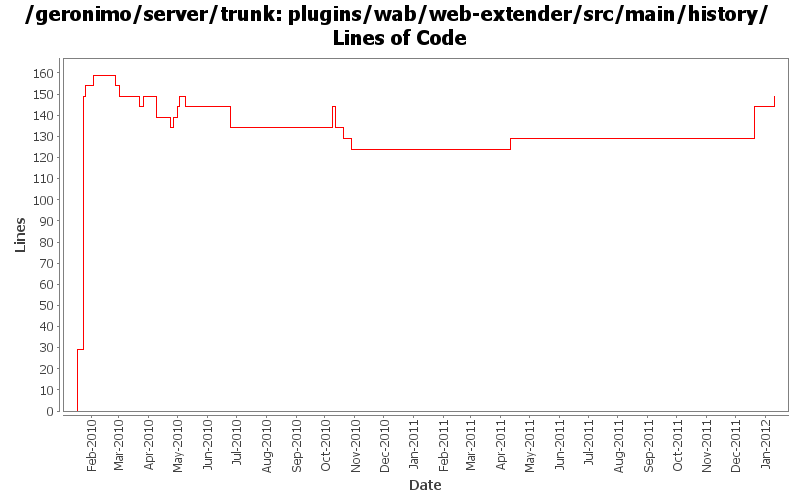

[root]/plugins/wab/web-extender/src/main/history

| Author | Changes | Lines of Code | Lines per Change |
|---|---|---|---|
| Totals | 27 (100.0%) | 237 (100.0%) | 8.7 |
| gawor | 10 (37.0%) | 161 (67.9%) | 16.1 |
| djencks | 6 (22.2%) | 36 (15.2%) | 6.0 |
| rickmcguire | 7 (25.9%) | 22 (9.3%) | 3.1 |
| xuhaihong | 3 (11.1%) | 13 (5.5%) | 4.3 |
| violalu | 1 (3.7%) | 5 (2.1%) | 5.0 |
use same asm as karaf
5 lines of code changed in 1 file:
GERONIMO-6240 Modify configs so that they use features as the bootstrap, and fix a few compile and test errors. Servers build but do not fully start
20 lines of code changed in 1 file:
GERONIMO-5885 Upgrade karaf from 2.1.2 to 2.2.1-SNAPSHOT
5 lines of code changed in 1 file:
switch to released version of activemq
0 lines of code changed in 1 file:
update to the latest jaspi version
0 lines of code changed in 1 file:
dependency cleanup
0 lines of code changed in 1 file:
GERONIMO-5230 Add Bean Validation Support to the connector 1.6 implementation.
Changes to Geronimo base.
10 lines of code changed in 1 file:
GERONIMO-5190 use openejb-jee jaxb tree for spec dds
5 lines of code changed in 1 file:
GERONIMO-5290 fix many of the deprecation warnings from maven 3
0 lines of code changed in 1 file:
remove snapshot version of jdt-core
6 lines of code changed in 1 file:
a. Calculate web permissions while starting the web module to support setServletSecurity feature in Servlet 3.0
b. Initial support ServletContainerInitializer, some improvements might be needed, such as use ASM ?
c. Support ORDERED_LIBS ServletContext attribute
6 lines of code changed in 1 file:
rename wab/geronimo-web to wab/geronimo-wab
1 lines of code changed in 1 file:
XBEAN-148 use new xbean-bundleutils
5 lines of code changed in 1 file:
Remove bundles from the server build
0 lines of code changed in 1 file:
more spec updates
0 lines of code changed in 1 file:
ejb spec needs jaxrpc and jaxrpc needs servlet
0 lines of code changed in 1 file:
GERONIMO-5242 Make spec version naming conventions consistent.
Updating trunk to new spec numbering rules.
1 lines of code changed in 1 file:
add blueprint dependency to remove some unresolved dependency errors at build time
5 lines of code changed in 1 file:
GERONIMO-5201 Repace service versions of spec bundles with Geronimo latest versions.
5 lines of code changed in 1 file:
some more dependencies updates and api updates for aries resolver
0 lines of code changed in 1 file:
obr and asm dependencies updates
0 lines of code changed in 1 file:
make sure to install ejb and management spec at the same time (management spec uses some ejb classes)
0 lines of code changed in 1 file:
formatting changes from a regeneration
1 lines of code changed in 1 file:
GERONIMO-5057 Use those xmlbeans generated by JAVA EE 6 schema files
6 lines of code changed in 1 file:
GERONIMO-5030: move extender into its own package
5 lines of code changed in 1 file:
GERONIMO-5030: Initial refactoring of some of the module deployment code to support deployment of Bundles. Also, implemented rfc66 extender that can actually deploy WABs with simple servlets and jsps.
122 lines of code changed in 1 file:
GERONIMO-5030, GERONIMO-5029: Initial plugin for rfc 66. Contains web container extender that doesn't do any actual work besides tracking web application bundles (WABs) and firing events. The extender code is based on Rick's code in sandbox. The plugin also installs Apache Aries webbundle url handler for converting WARs into WABs
29 lines of code changed in 1 file: